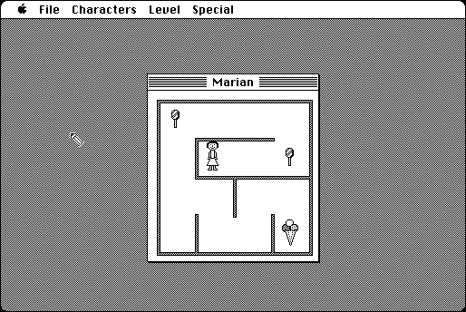

Download
BabyLabyrinth.zip (1.5M) BabyLabyrinth 1.0.5 repackaged into a zipped hfs disk image and checksum file. The disk image can be mounted with Mini vMac.
BabyLabyrinth.DSK.zip (1.5M) BabyLabyrinth 1.0.5 in the original format. (Which is also a zipped disk image, but repackaged above anyway to be more consistent with other downloads.)
copyright: Simone Bettini
mod date: Jul 13, 1996
license: free for non-commercial use
last known url
(gone)
A simple maze game for young children. You can customize it with your own animations and sounds.

If you find these downloads useful, please consider helping the Gryphel Project, which hosts them.
Here are the md5 checksums for the downloads, signed with Gryphel Key 5:
--------- GRY SIGNED TEXT --------- 88df9d7fc6417ebcfae8178831171254 BabyLabyrinth.zip 022dbe5be93664fe82a2fd9683241ba3 BabyLabyrinth.DSK.zip ------- BEGIN GRY SIGNATURE ------- Gry/4Xa8CFcUzxdN/N9oCDjEqGkJ0Z2cA9Tn8SQJANwCRQmFDbtBUN68T1XRMF4V dxRaA/X8kMTsAJ/PKH302ySwa8+P4bIKi5USWwJjRqUblOZsh3930bLvIaXKmUYQ r3mi8RYW9ZW5AanqTDjuRIZ70IpQ3mn8zC/q7uxPtXMw03m1byE57fMgx0phvztF -------- END GRY SIGNATURE --------